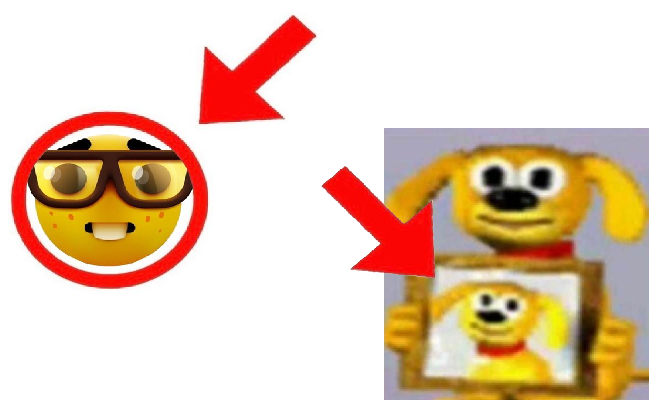

1. КубГУ
2. KUB
3.
4. сокращенная ссылку на внутреннюю страницу
5. сокр. ссылка на главную
6. На фрагмент
7. с тремя параметрами в url
8. ссылка с id
9. ссылка на внутренний каталог
10. ссылка на about
11. уровнем выше текущего
12. двумя уровнями выше
13.
контекстная ссылка в тексте абзаца
14. фрагмент страницы стороннего сайта
15.

16. ссылка с пустым href
17. Ссылка без href
18. ссылкa, по которой запрещен переход поисковикам
19.
20. 21. ссылка ftp
ССЫЛКА НА ФОРМУ